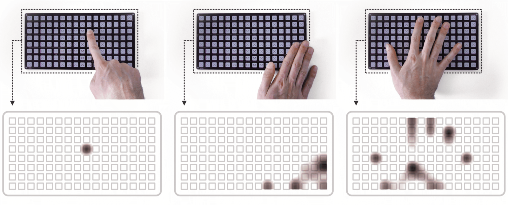
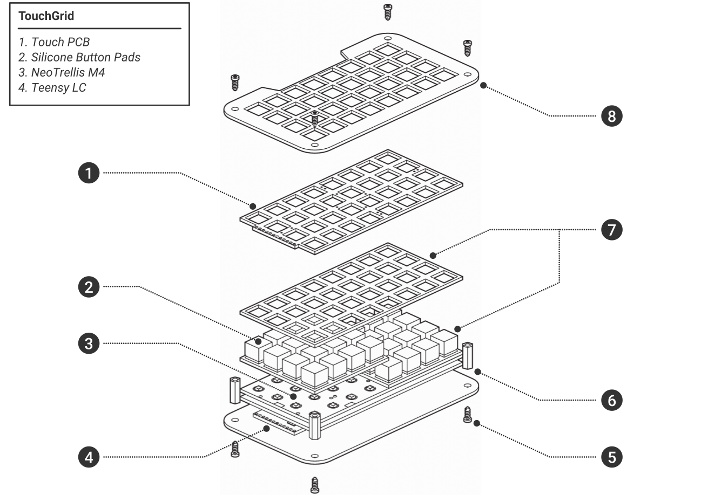
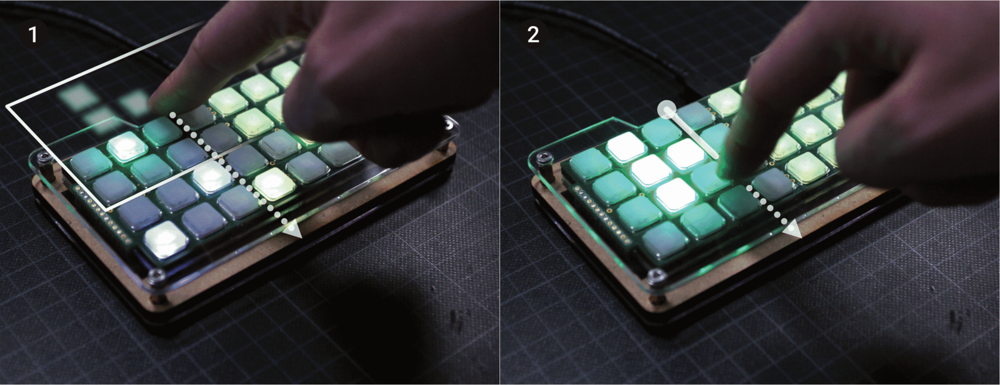
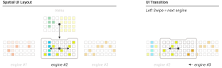
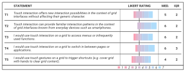

TouchGrid -- Combining Touch Interaction with Musical Grid Interfaces
Abstract
Musical grid interfaces such as the monome grid have developed into standard interfaces for musical equipment over the last 15 years. However, the types of possible interactions more or less remained the same, only expanding grid capabilities by external IO elements. Therefore, we propose to transfer capacitive touch technology to grid devices to expand their input capabilities by combining tangible and capacitive-touch based interaction paradigms. This enables to keep the generic nature of grid interfaces which is a key feature for many users. In this paper we present the TouchGrid concept and share our proof-of-concept implementation as well as an expert evaluation regarding the general concept of touch interaction used on grid devices. TouchGrid provides swipe and bezel interaction derived from smart phone interfaces to allow navigation between applications and access to menu systems in a familiar way.
Author Keywords
Grid, Touch Gestures, Prototype
CCS Concepts
•Applied computing → Sound and music computing; Performing arts; •Information systems → Music retrieval;
Introduction
Musical grid controllers such as the Tenori-On [1][2] and the monome grid [3] influence the way modern musicians produce and perform music for more than 15 years. While this interface concept started in a rather niche community, it developed almost to an industry standard and can nowadays be found in many common musical interfaces such as the Novation Launch line and the Ableton Push controller and even starts to replace keyboard interfaces in some instances (Polyend Medusa, ASM Hydrasynth).
This is obviously due to its generic nature which allows musicians experienced in programming to define custom workflows and performance interfaces, but also enables manufacturers to provide a haptic control element which is still flexible as a display. This allows for multi-functionality provided by one central interface and updatability on the long run, since the generic hardware can be used with and can adapt to updated software easily.
However, to improve the grid hardware interface to specific software, manufacturers added additional control elements such as menu buttons and encoders surrounding the grid. This compromises its original generic nature which is admired by many users since it allows for a focused interface without unused control elements. As a design implication of developing for grid-only controllers, users have to trade buttons permanently for irregularly used functionalities such as function and navigation buttons.
Since this design situation is comparable to designing user interfaces (UIs) for devices with limited screen real estate, we propose that many of the therefore developed solutions can be adopted to grid interfaces which are able to sense touch interaction additionally to the regular button interaction. In this paper we present a proof-of-concept prototype (TouchGrid) which uses the space in between the grid buttons as capacitive touch enabled areas. Beside the technical proof of concept, we evaluated the conceptual idea with an expert group (n=26) via an online survey. In the following we present implementation details and summarize our survey findings.
Related Work
While many UI explorations have been performed in the context of grid devices, non of them have considered the fusion of touch properties as an overlay of a button matrix. Related work has experimented with improving the feedback provided by the grid itself by adding colored LEDs [4] or shape-changing capabilities [5][6] as well as by adding separated touch screens [7]. In this special case, however, the screen was rather used as an integrated computer than a standalone interface. In, other HCI domains experiments with touch augmented keyboards (button-matrices) have been performed [8].
We consider this relevant for our context, since touch interfaces for musical applications have been postulated already in the early 90s by Shneiderman [9]. Early experiments implemented complex musical control tasks such as controlling vocal synthesis [10], bringing them closer to instruments by expressive control [11] and complex mappings [12][13], or facilitating collective musical interaction via mobile devices [14] using touch interfaces.
Touchscreens, as one of the most popular forms of graphical interfaces, provide strong benefits due to their visual capabilities and flexibility. However, their biggest disadvantage is that they lack kinaesthetic feedback and the “history of instrument playing shows us that only few instruments actually depend on visual feedback” [15] and rather the tactile and haptic experience is the important component when playing instruments [16].
This insight is reflected by the insight that new musical interfaces started to combine touch interfaces with tangible objects. As in the example of the reacTable [17], the advantages of touch screens and physical objects are combined. Screens are well suited to display complex information in an attractive manner, however, objects are advanced regarding physical manipulation [18] and their immediacy. Shortcomings of touch surface interaction in the musical context, such as playing pitch information without relying on visual attention, can be addressed by adding haptic layer/divider on top of the screen [19].
Beside their shortcomings touch screens are still considered for musical applications due to their (1) ubiquitousness [20], (2) their ability to open applications for immediate interaction with more than one touch point at a time [21], and (3) the circumstance that mobile devices with their large batch sizes can offer prize-wise attractive state-of-the-art multi sensory input and machine learning enabled devices [22].
TouchGrid
Our TouchGrid concept was developed to address problems resulting from the limited resolution and restricted space grids provide by adding interactions of touch interfaces to them. We developed a comprehensive concept which considers learnings and interactions from touch-screen device research and industry standards and implemented a functional prototype which at the moment includes a subset of the outlined interactions possibilities. This proof-of-concept prototype was used to collect expert feedback regarding the concept via an online survey (n=26).
Concept
TouchGrid expands the capabilities of a button grid without compromising on its original generic interface vision. Unlike other grids, TouchGrid does not add additional physical controls, but expands the existing interface structure itself. While grid cells track binary or velocity dependent input, soft touches are currently neglected, although they may convey useful information.
We suspect that if a grid can act as a touch-matrix, many interaction methods can be transferred from touch interfaces, including (1) Time-based Gestures such as bezel Interaction [23], swipe, and interaction with screen corners [24]; (2) Static Gestures such as hand postures and gestures [25][26]; and (3) expanded Input Vocabularies using finger orientation towards the device surface [27]. The grid estate problem can be solved by accessing infrequently used controls via touch gestures.
Hardware Implementation
The first iteration of TouchGrid was designed as a 16*8 grid PCB with 128 touch areas instead of buttons (see Figure 1). Creating the prototype we have learned that push and touch events can be distinguished based on time-based features such as the slope, peak or pitch of the capacitive signals. By using the grid as a low res image sensor, static gestures such as flat hand postures (open or closed 5-hand) [28] and time-based gestures such as swipes or bezel interaction can be detected. Due to the utilized technology, the pure number of capacitive cells decreased the maximum sample-rate so that fast interaction was not possible without a major hardware change, still the concept exemplified that with commercial capacitive technology used more gestural and holistic interactions are conceivable.


Image recognition can be used to differentiate the touch events from static gestures such as hand signs or interaction with active edges.
As the next step in our iterative design process, we experimented with common grid DIY kits to explore ways to extend their input capabilities with touch technology. As the basis for the prototype we used the Adafruit NeoTrellis M4 which consists of a 8*4 LED button matrix which can easily be expanded with further NeoTrellis tiles. Other advantages of this hardware platform are the RGB color feedback, and the accessible I2C port to easily connect other sensors and accessories. We designed a custom PCB containing 12 touch areas between the buttons which slides over the silicone button pads. The touch PCB is controlled with a Teensy LC which senses, processes the touch data, and sends events to the NeoTrellis M4, which is running the main application. Having only 12 in contrast to 128 capacitive touch areas, the sample-rate was no restriction in this small footprint device.


TouchGrid consists of (1) slide-over touch PCB, (2) button pads, (3) NeoTrellis M4, (4) Teensy 3.2, (5) screws, (6) hex spacers, (7) spacers, (8) housing.
TouchGrid Prototype
While the hardware is technically able to track many different touch interactions [29][30], TouchGrid currently implements the following touch interactions, since they are well known from generic smart devices and their functionality is used consistently over different manufacturers and operating systems which ensures a unified understanding:
Drag from off-screen to access context specific elements on demand (see Figure 3) such as menus from the top or specific UI elements from the three other sides.
Horizontal swipe to switch through linearly arranged content such as carried out with pictures and apps on touch-screen devices.
We implemented three sequencer engines that are arranged horizontally. A settings menu can be accessed by dragging from off-screen over the device's top side. The menu offers access to global transport controls (play, pause) and engine specific controls such as setting the corresponding MIDI channel (see Video demonstration).
The implemented touch interactions proved that it is possible to save grid estate that otherwise would have been used for control and navigation functionalities. No buttons had to be used for this purpose und thus the whole 8*4 grid is usable for controlling the main application.
We showed that infrequently used UI elements can be removed from the main page and be accessed only on demand. Further, navigation among apps can be achieved by swipe interaction. However, even more possible use cases for touch interactions on grid devices are conceivable.


TouchGrid addresses the grid estate problem. Touch gestures (e.g. “drag from off-screen”) are used to access infrequently used features just on demand.
Since we designed applications and menus to exist in a spatial context, when switching between applications and opening menus this spatiality was emphasized by animations rendering the transitional UI states (see Figure 4). This design is established in smart device context and has proven to help the users in understanding an applications’ structure without increasing the mental workload [31].


The application is organized in different spatially organized pages which can be accessed via swipe gestures. Transitional animations emphasize the spatial layout and are intended to help the users to build up a better understanding of the overall application structure.
Concept Evaluation
We presented a video of our TouchGrid prototype to 26 participants in the context of an online survey and asked for their opinion on the conceptual idea (see Figure 5). The goal of the study was to evaluate the acceptance of the concept and not to evaluate our technical realization.
Our participants were recruited via the monome forum (llllllll.co), due to its homogeneous user group. The 26 participants (22 male, 3 unspecified, 1 non-binary; 5: 20-29 years, 12: 30-39 years, 9: 40-60+ years) used grid devices between 1 and 13 years. All participants agreed that their data would be used in anonymized form for scientific publications.
The participants confirmed that touch gestures are familiar interaction patterns that can add to the interactions with grids (T2) and stated that they can imagine to use touch on grids to access infrequently used functions (T3) as well as to switch applications (T4).
Participants further added potential use cases of touch interaction such as using it as a freely map-able control (n=4), to navigate and zoom in sequence data (n=3), and for musical gestures (n=2).
When they were asked for reasons why they wouldn't use touch on grid devices. They expressed concerns regarding malfunction and interference with current button interactions (n=5), already having sufficient control provided by buttons only (n=3), and an expected increase in complexity due to a new layer of interaction capabilities (n=3).
Overall participants showed keen interest in the idea, provided further options for implementation and expressed their excitement about related improvements on current issues such as switching applications or accessing menu systems.


Discussion
As the collected expert feedback indicates, musicians would value new input methods in the context of grid-only devices to enlarge the generic input space and thus, giving them more freedom to design interactions which are probably more fitting to tasks they already perform but have to instead map to binary button presses.
Such a task is for example the navigation in larger data sets. The limited resolution and the overall restricted screen estate [32] of grids often prohibit to display a data set’s entirety at once. Specific real world examples are e.g. Ableton Live’s clip matrix view which, if more than 8 tracks or scenes are used, only can show an excerpt of all clips on a grid controller. While the Push 2 and the Launchpad provide navigation buttons, comparable to the arrow keys on a PC, this way of navigation can feel outdated when compared to the reality-based interaction [33] implemented in literally all smart phones and tablets with touch screens.
However, when interactions are time-critical, swipe gesture navigation can result in cumulative latencies due to the need to perform multiple swipe actions compared to only a single button press in case of a navigation bar like implementation. In this case, requirements regarding the available grid estate and the speed to perform an action must be weighed against each other. Our implementation offers the developer the opportunity to choose the fitting design for the specific application, since the touch-interaction adds a new interaction layer without compromising the original interface.
We would like to emphasize that touch-based interaction is perfectly suitable for the implemented interactions such as navigation among apps. Further, the understanding about touch-based interaction is way more uniform than any grid interaction at this point in time. What the implementation of touch-based interaction in the context of grid devices provides is that musicians can transfer their prior knowledge of familiar interaction principles about other technology carriers and their user experience design to the musical interface context.
This not only allows novices to directly experiment with and explore [34] a former unknown technology and still draw from prior experiences, but also helps designers to inform their application design by accepted standards and best practices. For example, gestures for zooming, rotating, translating and accessing hidden menus are already standardized and there is no need for reinventing these every time for each new application.
While this sounds like it would implicate that grids could easily be replaced by touch screens, the tangible properties of these such as the ability to tactually experience the interface [35] by feeling the surface, the interaction elements [36][37], and the passive haptic feedback when pushing buttons [38], in our opinion justifies their existence. Thus, we do not advocate for making touch screens more tangible [39][40][41], but instead we argue for expanding the capabilities of grids and other tangible devices [42] by learning from touch screen based interaction and combing the best from both worlds.
Conclusion
While many research projects investigated how the interaction with and properties of touch interfaces can become more tangible [43], we were interested if touch interaction can be transferred to grid devices to improve the usability of this tangible interface type.
Our preliminary investigations in this context indicate that transferring touch-based interaction principles to grids the usability issue of the limited grid estate can be solved by keeping the limited resources of pixels for frequent interactions regarding playing and conducting music and moving system operations to outsourced pages which are only accessed on demand.
While our project currently includes a technical proof of concept and a concept evaluation with the help of an expert group, we hope that these ideas will stimulate new interface explorations and device developments in the context of grid interfaces.
As future work, we consider the further development of touch resolution, with which more interactions can be detected and thus more expressive possibilities for manipulating and interacting with sounds in real time are available. Furthermore, combinations of touch interaction with simultaneous button presses are conceivable, opening up currently unconsidered interaction possibilities for future grid applications.
In summary we acknowledge that the past 15 years of grid developments were essential in understanding and learning how to play musical grid interfaces, and that the next phase will be determined in taking our play and the deduced learnings to inform new technologies and concepts to help to push grid devices to an even better user experience. Our experiments advocate for a holistic interface design approach which is open to adapt learnings and insights from related interface concepts. We are optimistic that our preliminary investigations in this design context inspires researchers from the NIME community and sparks an open-ended dialogue on future musical grid interfaces.
Citations
- ↩Nishibori, Y., & Iwai, T. (2005). TENORI-ON. In ACM SIGGRAPH 2005 Emerging Technologies. New York, NY, USA: ACM. https://doi.org/10.1145/1187297.1187321
- ↩Nishibori, Y., & Iwai, T. (2006). TENORI-ON. In Proceedings of the International Conference on New Interfaces for Musical Expression (pp. 172–175). Paris, France. Retrieved from http://www.nime.org/proceedings/2006/nime2006_172.pdf
- ↩Dunne, J. (2007). Monome 40h Multi-Purpose Hardware Controller. Computer Music Journal, 31(3), 92–94. https://doi.org/10.1162/comj.2007.31.3.92
- ↩Vallis, O., Hochenbaum, J., Murphy, J., & Kapur, A. (2011). The chronome: A case study in designing new continuously expressive musical instruments. In Proceedings of the Australasian Computer Music Conference (ACMC) 2011.
- ↩Xiao, X., Haddad, D. D., Sanchez, T., van Troyer, A., Kleinberger, R., Webb, P., … Ishii, H. (2016). Kinéphone: Exploring the Musical Potential of an Actuated Pin-Based Shape Display. In Proceedings of the International Conference on New Interfaces for Musical Expression (Vol. 16, pp. 259–264). Brisbane, Australia: Queensland Conservatorium Griffith University. Retrieved from http://www.nime.org/proceedings/2016/nime2016_paper0051.pdf
- ↩Colter, A., Davivongsa, P., Haddad, D. D., Moore, H., Tice, B., & Ishii, H. (2016). SoundFORMS: Manipulating Sound Through Touch. In Proceedings of the 2016 CHI Conference Extended Abstracts on Human Factors in Computing Systems (pp. 2425–2430). New York, NY, USA: ACM. https://doi.org/10.1145/2851581.2892414
- ↩Gao, M., & Hanson, C. (2009). LUMI : Live Performance Paradigms Utilizing Software Integrated Touch Screen and Pressure Sensitive Button Matrix. In Proceedings of the International Conference on New Interfaces for Musical Expression (pp. 58–59). Pittsburgh, PA, United States. Retrieved from http://www.nime.org/proceedings/2009/nime2009_058.pdf
- ↩Block, F., Gellersen, H., & Villar, N. (2010). Touch-Display Keyboards: Transforming Keyboards into Interactive Surfaces. In Proceedings of the SIGCHI Conference on Human Factors in Computing Systems (pp. 1145–1154). New York, NY, USA: Association for Computing Machinery. Retrieved from https://doi-org.emedien.ub.uni-muenchen.de/10.1145/1753326.1753498
- ↩Shneiderman, B. (1991). Touch screens now offer compelling uses. IEEE Software, 8(2), 93–94.
- ↩Kessous, L. (2004). Gestural control of singing voice, a musical instrument. Proceedings of Sound and Music Computing, 8.
- ↩Arfib, Daniel, Couturier, J.-M., & Loïc Kessous . (2005). Expressiveness and Digital Musical Instrument Design. Journal of New Music Research, 34(1), 125–136. https://doi.org/10.1080/09298210500124273
- ↩Tanaka, A. (2010). Mapping out instruments, affordances, and mobiles. New Interfaces for Musical Expression (NIME).
- ↩Fyfe, L., Lynch, S., Hull, C., & Carpendale, S. (2010). SurfaceMusic : Mapping Virtual Touch-based Instruments to Physical Models. In Proceedings of the International Conference on New Interfaces for Musical Expression (pp. 360–363). Sydney, Australia. https://doi.org/10.5281/zenodo.1177777
- ↩Tanaka, A., Tokui, N., & Momeni, A. (2005). Facilitating Collective Musical Creativity. In Proceedings of the 13th Annual ACM International Conference on Multimedia (pp. 191–198). Hilton, Singapore: Association for Computing Machinery. https://doi.org/10.1145/1101149.1101177
- ↩Geiger, G. (2006). Using the touch screen as a controller for portable computer music instruments. In Proceedings of the 2006 conference on New interfaces for musical expression (pp. 61–64).
- ↩Altinsoy, M. E., & Merchel, S. (2018). Touchscreens and Musical Interaction. In S. Papetti & C. Saitis (Eds.) (pp. 239–255). Cham: Springer International Publishing. https://doi.org/10.1007/978-3-319-58316-7_12
- ↩M. Kaltenbrunner, S. Jorda, G. Geiger, & M. Alonso. (2006). The reacTable*: A Collaborative Musical Instrument. In 15th IEEE International Workshops on Enabling Technologies: Infrastructure for Collaborative Enterprises (WETICE’06) (pp. 406–411).
- ↩Patten, J., & Ishii, H. (2007). Mechanical Constraints as Computational Constraints in Tabletop Tangible Interfaces. In Proceedings of the SIGCHI Conference on Human Factors in Computing Systems (pp. 809–818). San Jose, California, USA: Association for Computing Machinery. https://doi.org/10.1145/1240624.1240746
- ↩Strylowski, B., Allison, J. T., & Guessford, J. (2014). Pitch Canvas: Touchscreen Based Mobile Music Instrument. In NIME (pp. 171–174).
- ↩Pan, X., Wilson, J., Balukoff, M., Liu, A., & Xu, W. (2016). Musical Instruments Simulation on Mobile Platform. Electronic Imaging, 2016(7), 1–8. https://doi.org/doi:10.2352/ISSN.2470-1173.2016.7.MOBMU-300
- ↩Çamcı, A. (2018). GrainTrain: A Hand-drawn Multi-touch Interface for Granular Synthesis. In T. M. Luke Dahl Douglas Bowman (Ed.), Proceedings of the International Conference on New Interfaces for Musical Expression (pp. 156–161). Blacksburg, Virginia, USA: Virginia Tech. https://doi.org/10.5281/zenodo.1302529
- ↩Essl, G., & Lee, S. W. (2018). Mobile Devices as Musical Instruments - State of the Art and Future Prospects. In M. Aramaki, M. E. P. Davies , R. Kronland-Martinet, & S. Ystad (Eds.), Music Technology with Swing (pp. 525–539). Cham: Springer International Publishing.
- ↩Roth, V., & Turner, T. (2009). Bezel Swipe: Conflict-free Scrolling and Multiple Selection on Mobile Touch Screen Devices. In Proceedings of the SIGCHI Conference on Human Factors in Computing Systems (pp. 1523–1526). New York, NY, USA: ACM. https://doi.org/10.1145/1518701.1518933
- ↩Meschtscherjakov, A., Krischkowsky, A., Neureiter, K., Mirnig, A., Baumgartner, A., Fuchsberger, V., & Tscheligi, M. (2016). Active Corners: Collaborative In-Car Interaction Design. In Proceedings of the 2016 ACM Conference on Designing Interactive Systems (pp. 1136–1147). New York, NY, USA: ACM. https://doi.org/10.1145/2901790.2901872
- ↩Le, H. V., Mayer, S., Bader, P., & Henze, N. (2017). A Smartphone Prototype for Touch Interaction on the Whole Device Surface. In Proceedings of the 19th International Conference on Human-Computer Interaction with Mobile Devices and Services (p. 100:1-100:8). New York, NY, USA: ACM. https://doi.org/10.1145/3098279.3122143
- ↩Le, H. V., Kosch, T., Bader, P., Mayer, S., & Henze, N. (2018). PalmTouch: Using the Palm As an Additional Input Modality on Commodity Smartphones. In Proceedings of the 2018 CHI Conference on Human Factors in Computing Systems (p. 360:1-360:13). New York, NY, USA: ACM. https://doi.org/10.1145/3173574.3173934
- ↩Mayer, S., Le, H. V., & Henze, N. (2017). Estimating the Finger Orientation on Capacitive Touchscreens Using Convolutional Neural Networks. In Proceedings of the 2017 ACM International Conference on Interactive Surfaces and Spaces (pp. 220–229). New York, NY, USA: ACM. https://doi.org/10.1145/3132272.3134130
- ↩Tennant, R. A., & Brown, M. G. (1998). The American sign language handshape dictionary. Gallaudet University Press.
- ↩Saffer, D. (2008). Designing gestural interfaces: touchscreens and interactive devices. “ O’Reilly Media, Inc.”
- ↩Wobbrock, J. O., Morris, M. R., & Wilson, A. D. (2009). User-defined Gestures for Surface Computing. In Proceedings of the SIGCHI Conference on Human Factors in Computing Systems (pp. 1083–1092). New York, NY, USA: ACM. https://doi.org/10.1145/1518701.1518866
- ↩Kraft, J. F., & Hurtienne, J. (2017). Transition Animations Support Orientation in Mobile Interfaces without Increased User Effort. In Proceedings of the 19th International Conference on Human-Computer Interaction with Mobile Devices and Services. Vienna, Austria: Association for Computing Machinery. https://doi.org/10.1145/3098279.3098566
- ↩Rossmy, B., & Wiethoff, A. (2021). Musical Grid Interfaces: Past, Present, and Future Directions. In Proceedings of the International Conference on New Interfaces for Musical Expression.
- ↩Jacob, R. J. K., Girouard, A., Hirshfield, L. M., Horn, M. S., Shaer, O., Solovey, E. T., & Zigelbaum, J. (2008). Reality-Based Interaction: A Framework for Post-WIMP Interfaces. In Proceedings of the SIGCHI Conference on Human Factors in Computing Systems (pp. 201–210). Florence, Italy: Association for Computing Machinery. https://doi.org/10.1145/1357054.1357089
- ↩Rossmy, B., & Wiethoff, A. (2019). The Modular Backward Evolution — Why to Use Outdated Technologies. In M. Queiroz & A. X. Sedó (Eds.), Proceedings of the International Conference on New Interfaces for Musical Expression (pp. 343–348). Porto Alegre, Brazil: UFRGS. https://doi.org/10.5281/zenodo.3672988
- ↩SONNEVELD, M. H., & SCHIFFERSTEIN, H. N. J. (2008). 2 - THE TACTUAL EXPERIENCE OF OBJECTS. In H. N. J. Schifferstein & P. Hekkert (Eds.), Product Experience (pp. 41–67). San Diego: Elsevier. https://doi.org/https://doi.org/10.1016/B978-008045089-6.50005-8
- ↩Lederman, S. J., & Klatzky, R. L. (1987). Hand movements: A window into haptic object recognition. Cognitive Psychology, 19(3), 342–368.
- ↩Rossmy, B., & Wiethoff, A. (2019). COMB – Shape as a Meaningful Element of Interaction. In Proceedings of the Thirteenth International Conference on Tangible, Embedded, and Embodied Interaction (pp. 287–295). Tempe, Arizona, USA: Association for Computing Machinery. https://doi.org/10.1145/3294109.3295646
- ↩K. E. MacLean. (2000). Designing with haptic feedback. In Proceedings 2000 ICRA. Millennium Conference. IEEE International Conference on Robotics and Automation. Symposia Proceedings (Cat. No.00CH37065) (Vol. 1, pp. 783–788 vol.1).
- ↩Poupyrev, I., Nashida, T., & Okabe, M. (2007). Actuation and Tangible User Interfaces: The Vaucanson Duck, Robots, and Shape Displays. In Proceedings of the 1st International Conference on Tangible and Embedded Interaction (pp. 205–212). Baton Rouge, Louisiana: Association for Computing Machinery. https://doi.org/10.1145/1226969.1227012
- ↩Miruchna, V., Walter, R., Lindlbauer, D., Lehmann, M., von Klitzing, R., & Müller, J. (2015). GelTouch: Localized Tactile Feedback Through Thin, Programmable Gel. In Proceedings of the 28th Annual ACM Symposium on User Interface Software &Technology (pp. 3–10). Charlotte, NC, USA: Association for Computing Machinery. https://doi.org/10.1145/2807442.2807487
- ↩Jung, J., Youn, E., & Lee, G. (2017). PinPad: Touchpad Interaction with Fast and High-Resolution Tactile Output. In Proceedings of the 2017 CHI Conference on Human Factors in Computing Systems (pp. 2416–2425). Denver, Colorado, USA: Association for Computing Machinery. https://doi.org/10.1145/3025453.3025971
- ↩Rossmy, B., Rümelin, S., & Wiethoff, A. (2021). StringTouch - From String Instruments towards New Interface Morphologies. In Proceedings of the Fifteenth International Conference on Tangible, Embedded, and Embodied Interaction. Salzburg, Austria: Association for Computing Machinery. https://doi.org/10.1145/3430524.3440628
- ↩Patten, J., Recht, B., & Ishii, H. (2002). Audiopad: A Tag-based Interface for Musical Performance. In Proceedings of the International Conference on New Interfaces for Musical Expression (pp. 148–153). Dublin, Ireland. https://doi.org/10.5281/zenodo.1176458